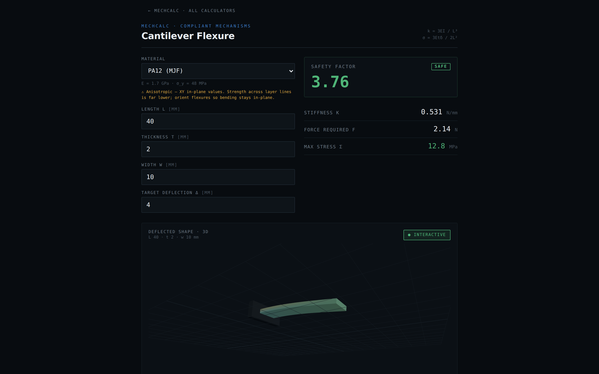
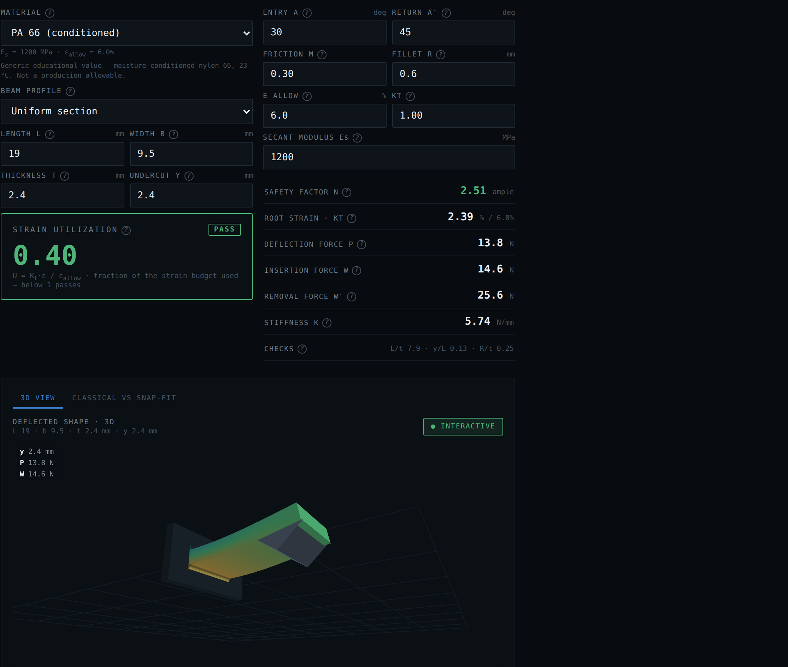
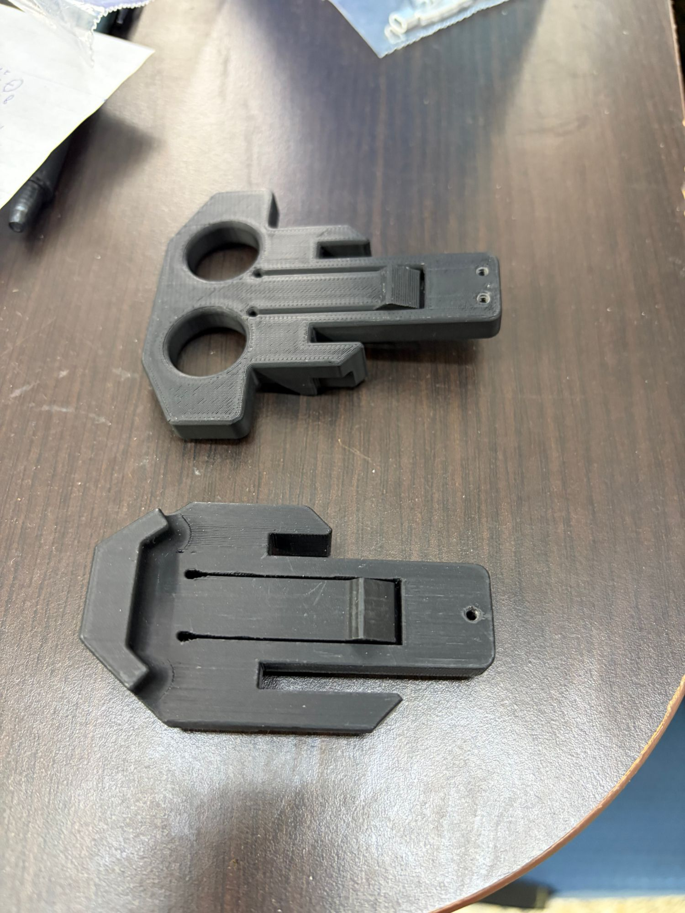
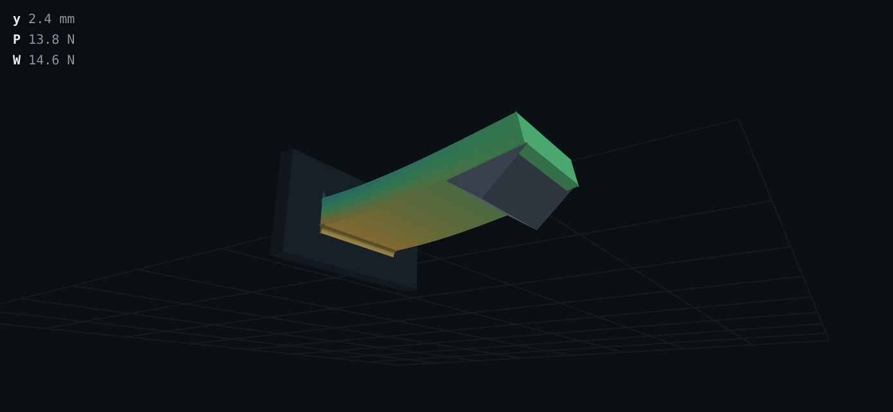
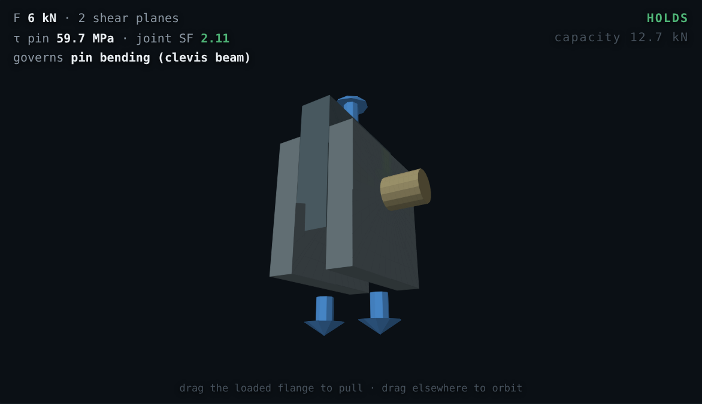
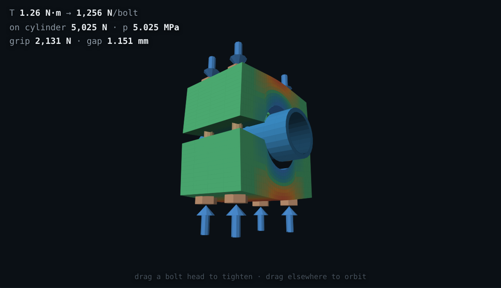
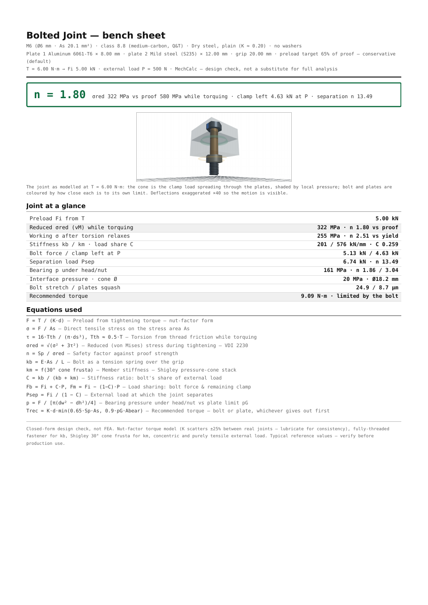

I am a mechanical design engineer. A small set of closed-form equations follows me through every project: the cantilever under a tip load, the strain at the root of a snap arm, torque to preload in a bolted joint. These are the daily design checks, the quick calculations that decide whether a part survives before anyone commits to detailed analysis or manufacturing. Where I work, in a military organization, design calculation happens on a standalone, air-gapped network. The checks live in Excel sheets and MathCAD files. Every project needs its own adjustments, so the files fork and drift, and it is often faster to redo the equation on paper. And there is a deeper problem than the repetition: a spreadsheet gives a number with no physical feel. It will not show a junior engineer how close the part is to failing, or where.
So the achievement I set out for was a toolkit of design-check calculators that replaces the Excel and paper round-trip for my recurring equations, and adds two things a spreadsheet cannot. First, a live 3D model that gives a feel for the part and the material, with sound and touch as well as color. Second, a printable calculation report in the user's own numbers, so the check can be filed like any engineering document. The toolkit contains only textbook equations and public reference data, which is what lets it live on the open web and grow tool by tool.
MechCalc is live at dmitrygofman.github.io/mechalc, a catalog of five working calculators: cantilever flexure, cantilever snap-fit, bolted joint, split-collar cylinder clamp, and a pin & bolt shear joint that checks every failure mode of Shigley Fig. 8-23. No instructions are needed. Type geometry, load and material, and every readout updates live; grab the 3D model, bend the beam or tighten the nut, and the stress colors follow the drag. Three of the five carry the story of the project.
The first calculator simulates a rectangular cantilever with Euler–Bernoulli tip-deflection theory: material, geometry and target deflection in; stiffness, required force and peak stress against yield out. I built it to check that a design works, but just as much to give a feel. The 3D beam bends as you drag its tip, the colors trace the stress field, a rising tone plays as it approaches failure, and on a phone it vibrates in your hand. That feel turned out to be the point. Junior engineers picked the tool up to design 3D-printed compliant parts, and the latching clips in Fig. 3 were sized with it: strain-checked and force-estimated before the printer ever ran. The material library carries printed polymers with anisotropy warnings, because a printed cantilever loaded across its layers is a different material than the datasheet admits.



The second tool wraps that beam in a real cantilever snap-fit with its engaging tooth: entry and return angles, friction, root fillet, uniform or tapered profiles. It computes root strain against the material's strain budget, deflection force, and the insertion and removal forces that come from the wedge action of the tooth. A self-locking guard flags return angles that can never release, and validity checks catch beam proportions the theory does not cover. This tool went through the most iteration of the five. It began as four competing design candidates on one shared, tested engine; one won, and about ten rounds of debugging and refinement followed. The engine carries a test suite of about forty cases, including a numeric cross-check of the closed forms, and a Classical-vs-Snap-Fit tab plus a full theory page explain where the model comes from and where it stops.
The third tool answers the question I am asked most: how hard to tighten. Torque to preload through the nut-factor model, the VDI 2230-style reduced stress while the wrench is still on, and the full clamped sandwich: each plate its own material, Shigley pressure-cone member stiffness, load sharing under the external load, separation and bearing-crush checks. The recommended torques were not taken from the equations alone. A research pass compared the outputs against published torque tables, and the model reproduces the handbook figures for steel joints (about 9 N·m for a dry M6 class 8.8). Because the target preload also respects the plates' bearing limits, the same recommendation drops to the far lower values plastics suppliers publish, about 1 N·m for an M5 into nylon, matching their separate tables. That agreement, from two directions at once, is what let me trust the tool enough to hand it to others.
Each 3D view draws the same physics the readouts compute, through one shared painter, so a lesson learned in one calculator (camera framing, the stress color scale) transfers to all of them. The flexure and snap arms are colored point by point from the bending-stress field, which is why the root glows before anything else does. The bolt scene draws the 30° pressure cones spreading through the plates and shades them by local pressure. The pin clevis paints every zone by the check that owns it, and its readout names the governing mode; the clamp collar shades crown and ear bending as the bolts pull the halves onto the tube. Dragging is the whole interface: pull the flange, tighten a bolt head, and the numbers move with your hand.



Every calculation can leave the screen as a typeset document: a one-page bench sheet someone can carry to the machine, or a full report with the worked equations step by step in the user's own numbers, design tips, scope notes and references. The 3D figure is snapshotted onto paper white for the page. Fig. 7 is a bench sheet the app generated for a bolted joint; the sample PDFs in the repository were all produced this way, by the app itself.

The app was built by co-coding with Claude Code, following the working method set in the course. The basic design came first: an architecture plan written before any feature, with the pure math kept in tested modules separate from the pages, one shared 3D painter, and a shared materials library. I also ran a research pass over the equations engineers use most, with the idea of generating calculators automatically from a table. The research was useful and the conclusion was the opposite of the idea. The leverage is in building one calculator instead of each calculation I would otherwise redo in Excel or on paper, one tool at a time, as real need appears. I keep adding tools as I work, and it has made my day-to-day calculation noticeably lighter.
Every tool in the catalog went through the same loop:
Four exchanges that shaped the app: three reconstructed from the commit record (their outcomes are the cited commits) and one quoted verbatim from a working session.
Two skills were written for this project, and both are attached. new-calculator is the
definition of done: a finished calculator is tested closed-form math, a grabbable 3D model, a worked
printable report, and a scope note, all four at once. The file carries the exact anatomy, working code
for the two mechanisms that kept going wrong (the print-document flow and the 3D snapshot onto paper
white), and a checklist that ends in a real browser. It is a record of mistakes I paid for once: the
print export that rendered as a black slab, the decoration that leaned the wrong way on a sign
convention. Each is now a rule no future session repeats. preview publishes the working
tree as a live clickable app after every change, so review happens by using the tool rather than
reading a diff. The repository's own history shows what the skill is worth. Before it existed, the
flexure shipped with no report or PDF export at all, and the bolt calculator needed about fifteen
documented refinement commits to reach its standard. The rounds completed after the skill existed, the
pin joint's finishing pass and the bolt's report export, each shipped complete in essentially one
round. Same developer, same AI. The difference is the encoded definition of done.
Two habits kept this co-coding rather than vibe-coding. The first is the anchor validation of step 4 above, which is where AI dependence could have hurt the product and did not: no non-physical result I know of survived to deployment, and every page states where its model stops. The second is reading everything the AI produces with the same suspicion I would give a junior engineer's calculation. A small illustration: the assignment PDF for this course contains a hidden instruction planted for AI tools that read it. Claude caught it and did not follow it, and flagged it to me instead. Checking the output is not a formality; sometimes the input is the trap.
The achievement I set out for was met. The recurring equations now live as calculators I reach for instead of Excel, MathCAD or paper, and the toolkit gives what those never did: the feel of the part in your hands, and a report worth filing at the end. The tools are in daily use, the printed parts of Fig. 3 are in service, and the catalog keeps growing as new checks come up in real work.
In retrospect, three lessons. The skill file should have been written after the first calculator, not after five; the before-and-after contrast in §3.3 is the price of that delay. Aiming AI at breadth was the second mistake: generating many calculators from a table sounded efficient, but the multiplier was depth, one calculator at a time, built to a standard a skill can enforce. Third, I underestimated what could be asked: early prompts requested single functions, and by the end one sentence produced a complete feature.